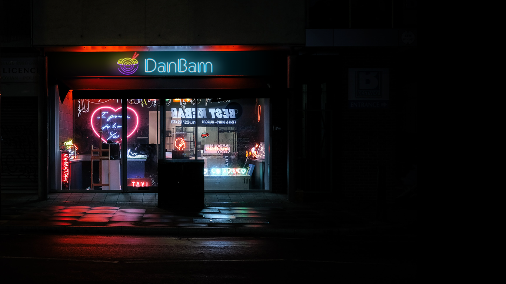
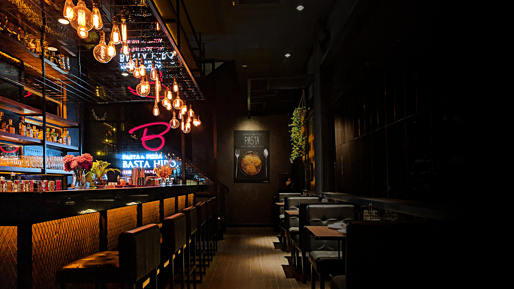
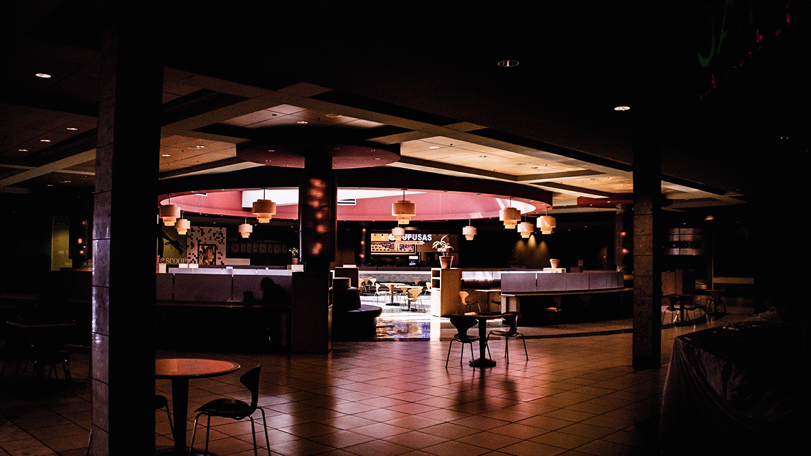

About DanBam!
Our History
Want to have some delicious Korean food? You're craving for some traditional menu? Then don't go anywhere, DanBam have them ready to be prepared for you.
Since 2010, DanBam have been the go-to restaurant for some people in Korea. Our restaurant offers many traditional Korean cuisine like Bibimbab, Bulgogi, Kimchi, Korean Fried Chicken, desert and some drinks to accompany your meal.
We're here to give you the best food and service, whenever you're looking for a great traditional Korean Cuisine.
Our Shop



Our Social Media